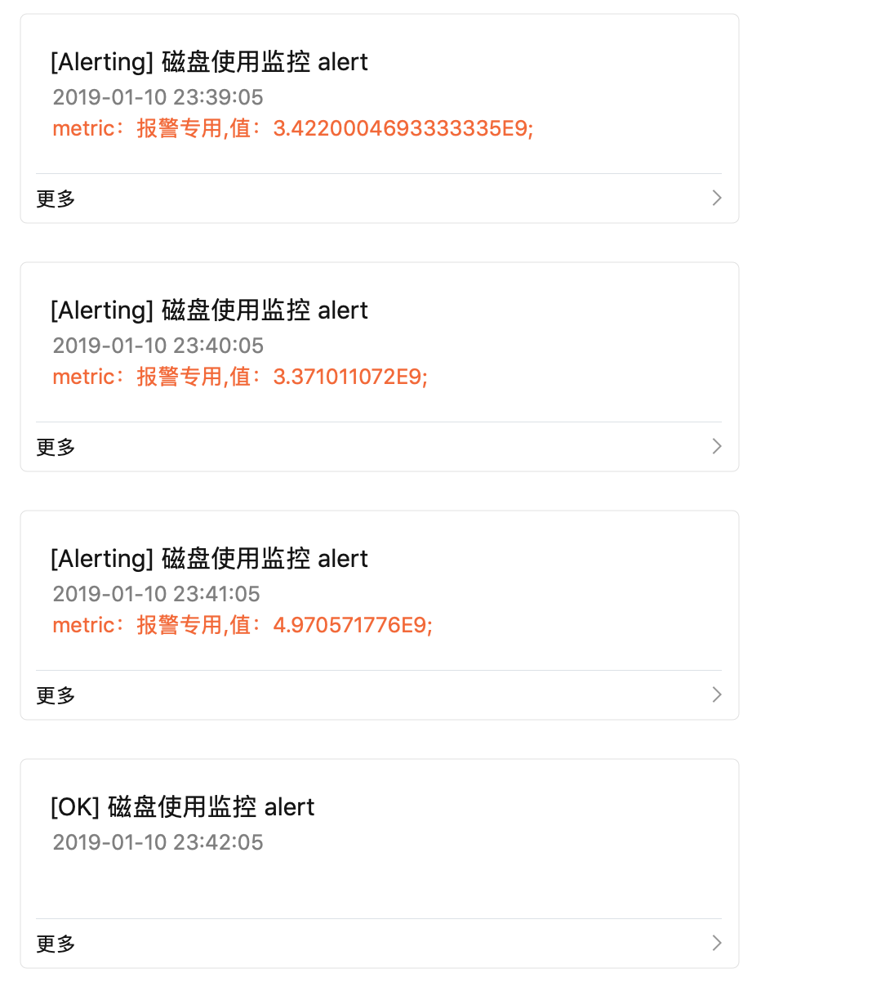

缘起 目前的grafana版本过低，只有在状态变化的时候才发送报警的提醒
Grafana sends notifications on state changes, so OK -> Alerting, Alerting -> OK, OK -> NoData, etc
高版本有work around可以解决：
This is possible since 5.3 if you configure alert reminder at the same or lower interval as the alert rule.
It’s not exactly what’s described in this issue but its close enough that we won’t implement this feature.
当前配置信息 当前版本：
1 2 [qisheng.li@yd-devops-web yum.repos.d]$ sudo yum list installed | grep grafana grafana.x86_64 4.6.3-1 installed
启动脚本：
1 2 3 [qisheng.li@yd-devops-web yum.repos.d]$ ps axu | grep grafana qisheng+ 24599 0.0 0.0 112660 976 pts/1 S+ 14:10 0:00 grep --color=auto grafana grafana 28995 0.9 0.2 2414524 46008 ? Ssl Jan08 28:22 /usr/sbin/grafana-server --config=/etc/grafana/grafana.ini --pidfile=/var/run/grafana/grafana-server.pid cfg:default.paths.logs=/var/log /grafana cfg:default.paths.data=/var/lib/grafana cfg:default.paths.plugins=/var/lib/grafana/plugins
LDAP配置：
1 2 3 4 5 [auth.ldap] enabled = true config_file = /etc/grafana/ldap.toml allow_sign_up = true
风险评估 grafana只是作为展示层，升级对程序打点和数据收集无影响，而且grafana是后向兼容的；升级只会影响监控的查看和报警。
We recommend everyone to upgrade Grafana often to stay up to date with the latest fixes and enhancements. In order make this a reality Grafana upgrades are backward compatible and the upgrade process is simple & quick.
升级步骤 备份配置文件
/etc/grafana/grafana.ini
/etc/grafana/ldap.toml
1 2 [qisheng.li@yd-devops-web yum.repos.d]$ sudo cp -p /etc/grafana/ldap.toml ~/ [qisheng.li@yd-devops-web yum.repos.d]$sudo cp -p /etc/grafana/grafana.ini ~/
备份db 1 [qisheng.li@yd-devops-web yum.repos.d]$ sudo cp -p /var/lib/grafana/grafana.db ~/
更新yum源 aliyun的yum的最新版本是4.6.3是我们当前使用的版本
1 2 3 4 5 6 7 8 9 10 11 12 13 14 15 16 17 [qisheng.li@yd-devops-web yum.repos.d]$ yum info grafana Loaded plugins: fastestmirror Loading mirror speeds from cached hostfile * base: mirrors.aliyun.com * extras: mirrors.aliyun.com * updates: mirrors.aliyun.com Installed Packages Name : grafana Arch : x86_64 Version : 4.6.3 Release : 1 Size : 133 M Repo : installed Summary : Grafana URL : https://grafana.com License : "Apache 2.0" Description : Grafana
添加grafana的源Installing on RPM-based Linux | Grafana Documentation
新建配置文件/etc/yum.repos.d/grafana.repo
键入一下内容：
1 2 3 4 5 6 7 8 9 [grafana] name =grafanabaseurl =https://packages.grafana.com/oss/rpmrepo_gpgcheck =1 enabled =1 gpgcheck =1 gpgkey =https://packages.grafana.com/gpg.keysslverify =1 sslcacert =/etc/pki/tls/certs/ca-bundle.crt
grafana也提供了beta的源，生产环境不建议使用。
再次查看yum信息
1 2 3 4 5 6 7 8 9 10 11 12 13 14 15 16 17 18 19 20 21 22 23 24 25 26 27 28 29 [qisheng.li@yd-devops-web yum.repos.d]$ yum info grafana Loaded plugins: fastestmirror Loading mirror speeds from cached hostfile * base: mirrors.aliyun.com * extras: mirrors.aliyun.com * updates: mirrors.aliyun.com Installed Packages Name : grafana Arch : x86_64 Version : 4.6.3 Release : 1 Size : 133 M Repo : installed Summary : Grafana URL : https://grafana.com License : "Apache 2.0" Description : Grafana Available Packages Name : grafana Arch : x86_64 Version : 5.4.2 Release : 1 Size : 52 M Repo : grafana Summary : Grafana URL : https://grafana.com License : "Apache 2.0" Description : Grafana
可以拿到5.4.2的信息了
升级版本 1 [qisheng.li@yd-devops-web yum.repos.d]$ sudo yum update grafana
配置reminder
这样如果处于alert状态就会每隔30s报一次

参考